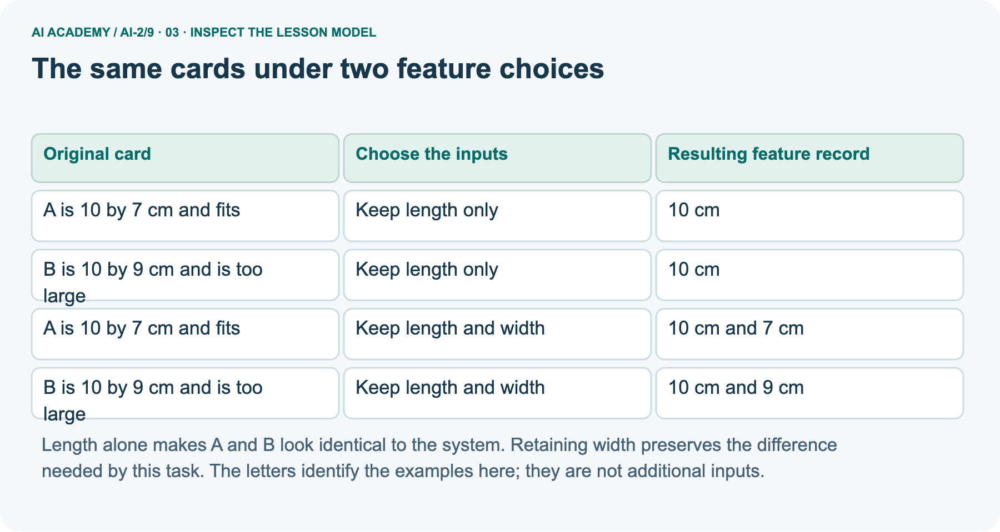
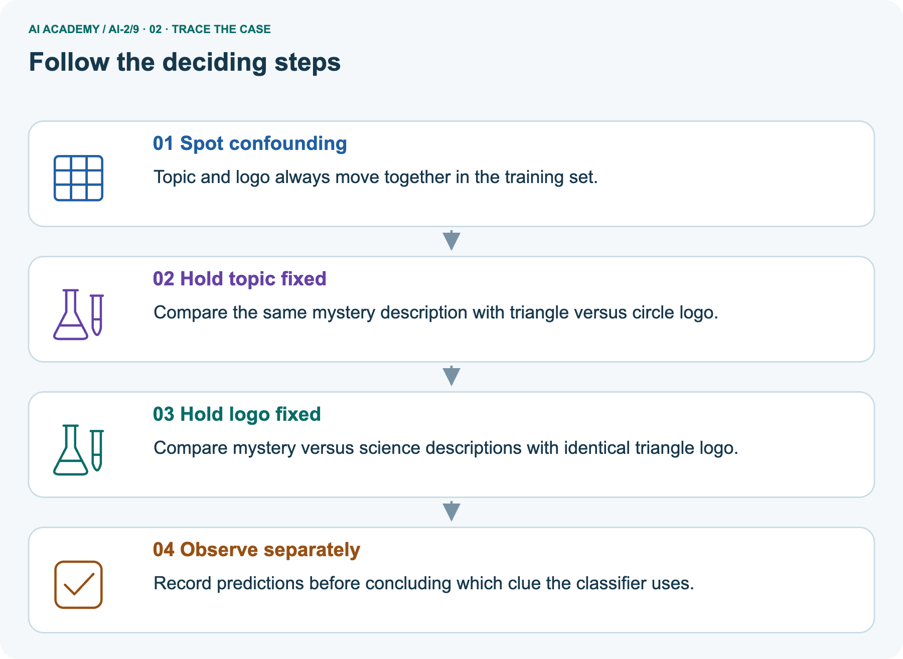
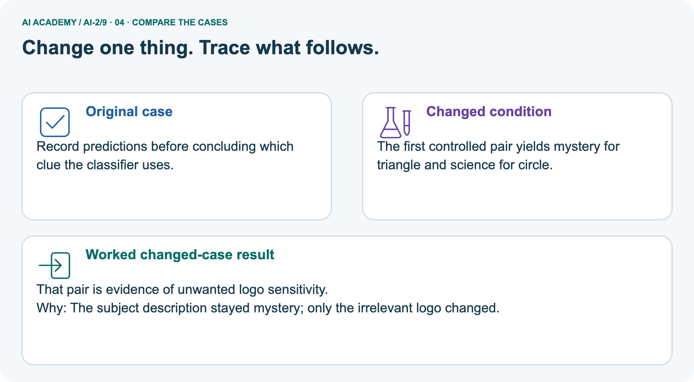
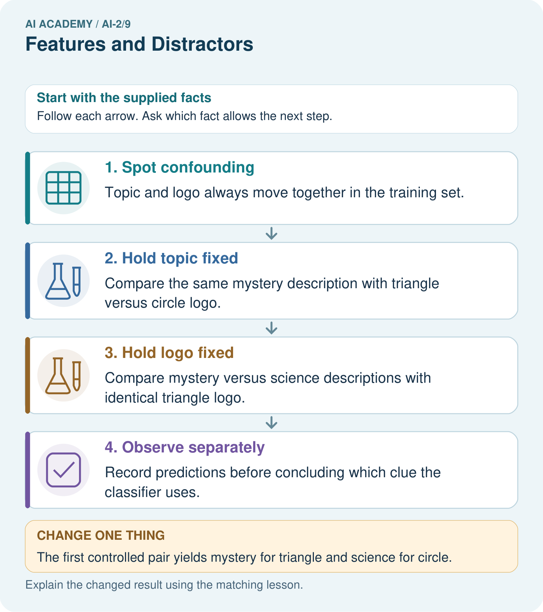
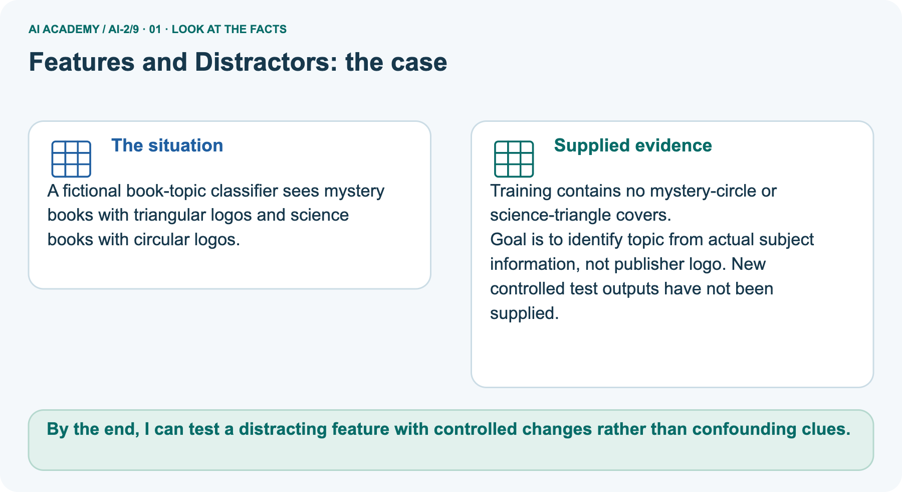
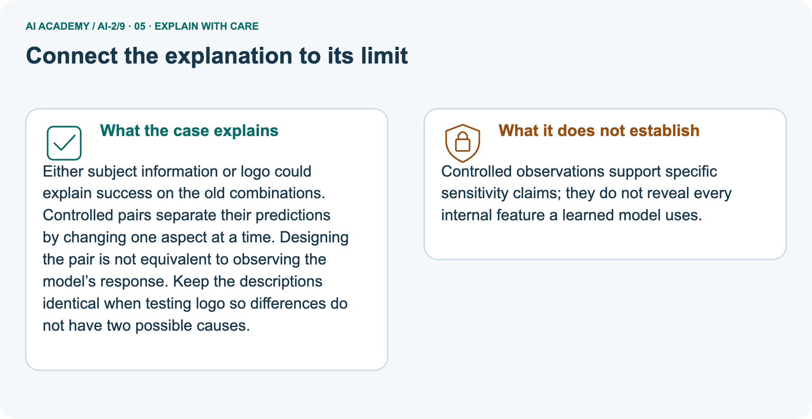
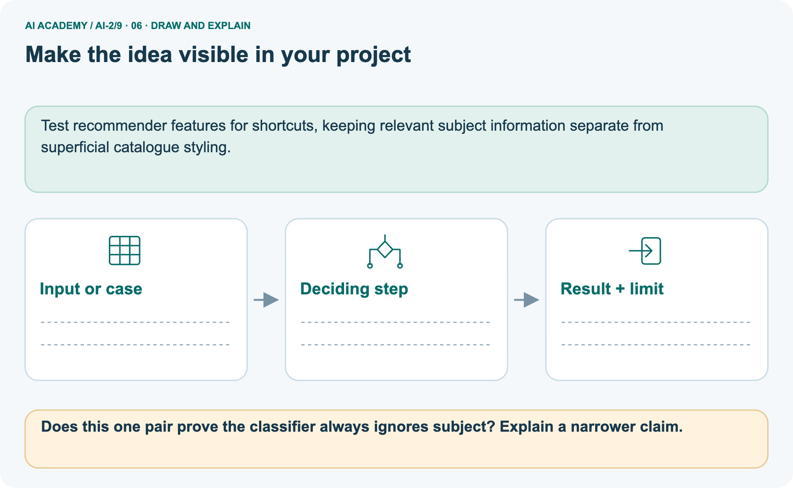

AI Academy · Level 2 · Grade 7 · Week 9 · Student lesson
Features and Distractors
Learn to understand, design, build, test and explain AI systems responsibly.
Project: Transparent Book Recommender
THE CONNECTED WEEK
Choose the target. Preserve the distinction. Challenge the shortcut.
Use controlled cards, explicit timing and diagnostic subject-logo comparisons to justify inputs.
Keep one habit: Task and units → missing distinction → controlled changes → honest evidence limits.
Main lesson · Section 1
What information does the task actually need?
Choose inputs that preserve needed distinctions before considering a model.
Your learning goals
I can choose recorded properties that preserve distinctions needed for a stated task.
I can show why identical feature records can hide examples with different target labels.
I can reject an answer copied into the inputs and test a proposed feature with a new case.
Retrieve last week’s label-evidence limit
Close your notes first. A rough first answer helps us choose the right starting point; it is not a score for your ability.
Two annotators agree that a calendar card is ready. What must you still check before treating that label as correct?
This week’s controlled-test goal
By the end, I can test a distracting feature with controlled changes rather than confounding clues.
Earlier wording, alternatives and picture transcripts
Your learning target
Remember before reading
Without opening the old lesson, explain one key idea from Operational Labels. Give an example and a mistake that the idea helps you avoid.
Without opening the old lesson, explain one key idea from Debugging Strategies. Give an example and a mistake that the idea helps you avoid.
Without opening the old lesson, explain one key idea from Branching Logic. Give an example and a mistake that the idea helps you avoid.
After trying, check the relevant lesson or ask your teacher. Change the part of your explanation that the evidence shows was wrong.
Week 9: Features and Distractors
A feature should help the task and be available at decision time.

THINKER MISSION
Rank book features; reject cover color as a shortcut.
Thinker name and date:
Readiness for the connected explanation
This week’s end goal
Main lesson · Section 2
Define the card-fitting task before choosing features
The rule uses measured dimensions in a fixed orientation.
The exact task and measurement assumptions
Imagine a paper sorting task for a model delivery station. Each rectangular card has a length, width, colour and card number.
The station labels a card fits if its length is at most 12 centimetres and its width is at most 8 centimetres. Both limits include equality.
Cards stay flat in the marked orientation; turning, bending and thickness are outside this paper task. All measurements in the first examples are known positive whole numbers.
Separate the feature record from the target
A feature is a recorded input property, such as width in centimetres. The target label is the answer we want to produce: fits or too large under this guide. Decide what the answer means before choosing the inputs.
A card number can help us find a record, but knowing its number does not tell us its dimensions.
Why this investigation needs no trained model
This guide already gives us a direct rule, so we do not need to train a model to solve it. We use the task to investigate the information that either a rule or a learned model would need.
Later, when relationships are learned from examples, the same question remains: did we supply the distinctions the task requires?
Earlier wording, alternatives and picture transcripts
PICTURE STORY
Notice → Predict → Explain
Begin with visible evidence. Do not explain more than the picture and information support.
MYSTERY
The learners must use features and distractors to solve a problem. What information do they have? What decision or calculation do they make? What would count as evidence that it worked?
Three observations (what you can point to):
My prediction and the clue supporting it:
A closer explanation
Main lesson · Section 3
See what disappears when width is omitted
The same visible input cannot guarantee two different correct answers.
Compare cards A and B
Card A is 10 centimetres long and 7 centimetres wide. Card B is 10 centimetres long and 9 centimetres wide. A fits; B is too large because its width exceeds 8. Compare two ways of recording these cards.
Follow the length-only and length-width records



Explain the information limit
A system receiving only the length cannot use the hidden width to tell these two cards apart. The same input, 10, is paired with two different correct answers.
It may guess, return an uncertainty, or use a usual answer, but length alone cannot guarantee the right label for both. A more complicated model cannot reconstruct this missing distinction with certainty from that input alone.
Keep order and units explicit
A feature record needs a consistent order and units. Here we write length in centimetres first, then width in centimetres.
The record 10, 7 means something different if someone silently switches the order or records millimetres. Write the definitions alongside the data.
Point to the distinguishing measurement
Point to the input, the deciding step and the result in this week’s visual. Explain the same step in ordinary words. A picture helps when you can say what each part represents.
Earlier wording, alternatives and picture transcripts
VISUAL MECHANISM
Input → Process → Output
Trace the information. At each stage, ask what changed and how you could test it.

↓

↓

Which stage could fail even when the other two are correct? Explain:
A closer explanation
The same cards under two feature choices
Connect the picture and the explanation
Main lesson · Section 4
Choose a case that challenges a feature shortcut
State what is changed and what remains fixed.
Four pictures with a purpose

Normal case: predict the result and deciding evidence.

Boundary case: identify the exact limit.

Missing information: name what must be clarified.

Transfer case: explain which procedure still applies.
Choose a revealing case
Which case is most likely to reveal a hidden assumption? Why?
Predict the supplied changed case
Change: The first controlled pair yields mystery for triangle and science for circle.
Check after predicting
Prediction: That pair is evidence of unwanted logo sensitivity.
Reason: The subject description stayed mystery; only the irrelevant logo changed.
Earlier wording, alternatives and picture transcripts
CASE GALLERY
Four Tests, Four Kinds of Evidence
A system is not understood until it survives more than one comfortable example.
NORMAL CASE: predict and name evidence. BOUNDARY CASE: predict and name evidence.
MISSING INFORMATION: predict and name evidence. TRANSFER CASE: predict and name evidence.
Change one thing in the pictured case
Main lesson · Section 6
Compare controlled changes, then investigate a topic-logo shortcut
Change one aspect at a time and label predictions honestly.
Separate rule-derived answers from unobserved model outputs
Keep two investigations separate. In the card task, the written dimension rule determines the expected answers. In the fictional classifier case below, the old training combinations are given but new test predictions are not. You can design diagnostic pairs without pretending to have run a model. The changed-case panel supplies hypothetical outcomes for interpretation only.
Four card comparisons with one changed input
| Card measurements and colour | Label under the guide | What the comparison shows |
|---|---|---|
| 10 by 7 cm and blue | Fits | Compare with the next card |
| 10 by 9 cm and blue | Too large | Same length and colour but width changes the label |
| 13 by 7 cm and blue | Too large | Same width and colour as the first card but length changes the label |
| 10 by 7 cm and red | Fits | Changing only colour does not change this guide |
Explain useful dimensions and a misleading colour pattern
The first two cards show why width matters. The first and third show why length matters. The first and fourth show that colour has no part in this particular rule.
That is a statement about our task, not a claim that colour is useless for every task. For sorting red and blue cards, colour would be essential.
Suppose every fitting card in a small practice set is blue and every oversized card is red. Colour would appear to predict the labels perfectly in that set. A red 10 by 7 card and a blue 13 by 7 card expose the shortcut.
Check a proposed feature on deliberately different cases before trusting the practice score.
Introduce the separate topic-classifier case
A fictional book-topic classifier sees mystery books with triangular logos and science books with circular logos.
Training contains no mystery-circle or science-triangle covers.
Goal is to identify topic from actual subject information, not publisher logo. New controlled test outputs have not been supplied.
Design pairs that separate subject from logo



Either subject information or logo could explain success on the old combinations. Controlled pairs separate their predictions by changing one aspect at a time.
Designing the pair is not equivalent to observing the model’s response. Keep the descriptions identical when testing logo so differences do not have two possible causes.
Interpret the supplied hypothetical changed case
Change one thing: The first controlled pair yields mystery for triangle and science for circle. Predict the result before checking the explanation. What remains the same?
Check that interpretation after trying



Limit the conclusion to the evidence
Read the labelled picture: Does this one pair prove the classifier always ignores subject? Explain a narrower claim.
Controlled observations support specific sensitivity claims; they do not reveal every internal feature a learned model uses.
Earlier wording, alternatives and picture transcripts
WORKED EVIDENCE
Reason Step by Step
Predict first. Then check each step. A correct answer without visible reasoning is incomplete evidence.

1. Goal: recommend enjoyable readable books.
2. Useful: genre match, reading level, length preference.
3. Distractor: cover color may match past labels by accident.
4. Deployment check: every chosen feature must exist before recommending.
Recalculate, retrace, or restate the reasoning in your own representation:
CHECK Did the evidence answer the exact question? Did the total, path, or source record stay consistent?
A closer explanation
Learn from the worked case
Cover the result before checking it. Say what is given, choose the procedure, and follow one step at a time. Then uncover the result and explain your first mismatch. Ask why a step is allowed, not only what number it produces.
A pictorial worked case: Features and Distractors
The facts we will use



Read the picture one step at a time
Why this result follows
What this example does not establish
Main lesson · Section 7
Challenge a perfect practice score with a diagnostic card
A shortcut can match a small practice set without following the task.
Check distinguishability and input timing
Before adopting a feature set, state the task, name the inputs with units, and ask whether two different answers can share the same input record. Construct such a pair if you can.
Then check that each input is available at the time the answer is needed. These checks can reveal a broken representation before any model is trained.
Retain the paper task’s limits
For our known measurements and fixed orientation, length and width are sufficient to apply the paper rule exactly.
That does not establish whether a real parcel will fit through a real opening: thickness, shape and measurement error were excluded. If the task changes, review the features again.
More columns are not automatically better; each one needs a reason to be collected and used.
Create a counterexample to colour-only prediction
Earlier wording, alternatives and picture transcripts
ERROR DETECTIVE
Compare → Diagnose → Repair
Do not patch the answer. Find the earliest unsupported assumption, wrong step, or weak evidence.

| Evidence record | Expected | Actual | Likely cause / next test |
|---|---|---|---|
| normal case | works | ||
| boundary case | stated rule | ||
| missing input | safe response | ||
| fresh transfer | generalizes |
Repair one cause. Why is this repair better than changing several things?
A closer explanation
Main lesson · Section 8
Put every candidate input on the decision timeline
An answer added after inspection cannot be an earlier prediction input.
Spot the sticker leakage
After measuring a card, a teacher adds a sticker saying fits or too large. A learner proposes using sticker text as an input to predict the label before that inspection.
The sticker seems excellent in the completed records because it contains the answer. But it does not exist at the time of the intended prediction. This is leakage: development has used information the real task cannot provide.
Draw a line at the moment the system must answer. On the before side, put the permitted measurements available then. On the after side, put the final label sticker.
Keep labels available for teaching and checking predictions, but do not feed the sticker back in as an input for this task.
Try an unknown width before inspection
Construct a width-only collision in W2
Use workbook W2 for the connected example “Features and useful distinctions”. First fill the input and rule boxes. Try the middle steps before asking for a hint. After a hint, try the next step yourself.
| Plan | Do | Check |
|---|---|---|
| What is given? Which rule or procedure applies? | Record each intermediate step. | Does the result follow? What remains unknown? |
Explain your trace to a partner. Your partner points to one step to check. Swap roles on the next case. Each person writes their own explanation.
Challenge the missing-measurement guarantee
Use the worked case for Features and useful distinctions. Proposed explanation: “A stronger model can always recover an omitted measurement”. Decide whether this explanation is supported.
Point to the step or supplied fact that decides; explain your repair if needed.
Answer on your own before discussion. If you are unsure, say which step you need help with.
Explain what a controlled pair can establish
Does this one pair prove the classifier always ignores subject? Explain a narrower claim.
This is supported practice. Keep the separately named independent case for an attempt before feedback.
Earlier wording, alternatives and picture transcripts
LOGIC STUDIO
Trace Before You Run
Block code, pseudocode, tables, and diagrams are different ways to expose the same reasoning.

SET evidence_record PREDICT expected_result RUN one normal case and one boundary case COMPARE actual_result with expected_result IF different: locate first cause; change one factor; RETEST EXPLAIN result, limitation, and next safe step
Trace one input. Which line changes the state or chooses a path?
A closer explanation
Practise with less help: Prove that one measurement is insufficient
Check your reasoning
Explain the picture
Main lesson · Section 9
Audit eight supplied candidate features
Select the smallest justified set for this explicit task.
Fix the task and decision time
Feature audit: predict fits or too large for positive whole-number rectangular cards, flat in the fixed orientation. Fits means length <=12 cm AND width <=8 cm, including equality. Make the prediction before inspection. Review these eight candidate fields; an available field is not automatically useful. There is no requirement to select three when two are sufficient for this written rule. Use fictional records and collect no real learner names.
The eight candidates
| Candidate field | Meaning and timing |
|---|---|
| length_cm | Measured before inspection |
| width_cm | Measured before inspection |
| colour | Written red or blue before inspection |
| card_number | Identifier assigned before inspection |
| thickness_mm | Measured before inspection; excluded by the flat-card task |
| inspection_sticker | Fits/too large answer added after inspection |
| learner_full_name | Name attached to a record before inspection |
| record_time | Time when the record was written |
Justify, challenge and record
For each field record: available before the decision? needed by the stated rule? unnecessary information about a person? possible shortcut or leakage? Justify your selected set and reject at least two tempting alternatives. Then use 10×7 and 10×9 cm to challenge length-only inputs, and 11×6 and 13×6 cm to challenge width-only inputs. Keep all cards blue for these pairs. Finally compare blue and red copies of the same 10×7 card. Write the rule-derived expected labels; record paper checks separately from model predictions, which remain not supplied.
Keep expected and actual evidence separate
| Test / input | Prediction | Actual | Evidence / calculation | Change or keep? |
|---|---|---|---|---|
| normal | ||||
| boundary | ||||
| missing | ||||
| fresh transfer |
What did the hardest test teach you that the normal test did not?
Before trying: what do I expect, and why? While trying: which step could first go wrong? Afterwards: what did I actually observe, and what should change? Keep “not run” if you only traced the procedure.
Earlier wording, alternatives and picture transcripts
EVIDENCE LAB
Predict → Test → Record → Explain
Keep expected and actual results separate. Surprises are useful data when recorded honestly.

Audit the eight supplied candidate features for relevance, availability, privacy and shortcut risk. Defend the smallest sufficient set for the written card rule and reject at least two tempting alternatives; do not add a third feature merely to meet a quota.
Plan → try → check
Main lesson · Section 14
Try alone: test subject versus background colour
Design controlled comparisons without inventing classifier outputs.
The reserved space-and-animal case
Training covers show space books only on yellow backgrounds and animal books only on blue backgrounds. Design two controlled comparisons to test whether a classifier uses the intended subject.
Your first attempt and support record
Attempt this case before feedback. Record any help. Earlier examples below are further practice; a case already practised with feedback cannot establish fresh transfer.
Your teacher has the independent answer and scoring criteria. Complete the matching workbook week to keep your practice evidence together.
Use feedback after the attempt
Attempt the independent case before hints. Record whether you worked alone, used a hint or followed a model. After feedback, fix the first unsupported step and explain why it changed.
A later check uses a changed case, not a copied answer.
Earlier wording, alternatives and picture transcripts
Independent case: Changed independent case
Week 9 Independent application
Close the worked explanation. Apply the idea to this different question without copying.
Predict whether a book is short using page count and cover colour. Which feature directly supports the defined label? Give a counterexample to colour.
My answer, with a trace, calculation or supporting evidence
Create and test
Change one relevant detail. Predict the result before testing. Include a boundary or missing-information case when it helps reveal a limit.
My changed input and expected result
Connect to your project
Use explainable traits that connect to the reader’s stated preferences.
The evidence I will keep
Transfer practice from the original programme
All animal books in training have green covers. How could you test whether a recommender is using subject or cover colour? Supply two diagnostic test descriptions.
Use feedback to improve
Main lesson · Section 11
Justify every recommender feature against the stated task
Keep subject information separate from catalogue styling.
Your portfolio checkpoint
THIS WEEK’S CHECKPOINT Use explainable traits that connect to the reader’s stated preferences.
Test recommender features for shortcuts, keeping relevant subject information separate from superficial catalogue styling.
Record inputs, rules, human choice and limits
SYSTEM MAP Reader need → allowed inputs → transparent rule or score → ranked candidates → explanation → test record → human decision
What will you add, change, or verify in the project this week?
What should remain under human control?
RESPONSIBLE DESIGN Collect only necessary information. Show uncertainty and limits. Never confuse a ranking with a fact about a person.
Earlier wording, alternatives and picture transcripts
CUMULATIVE PROJECT
Transparent Book Recommender
Every week adds one inspectable piece. The system must show how it reached a result.

Evidence for your project
Main lesson · Section 16
Finish: explain a distinction the inputs must preserve
State a diagnostic pair and a limit of your evidence.
Recall the goal without notes
Close your notes. Explain this goal in your own words: Choose recorded properties that preserve distinctions needed for a stated task
Choose a changed case for your return
If you are unsure, return to the worked picture and explain one arrow. If you are ready, change an input or assumption and justify your prediction.
Save your workbook evidence. At the next review, try a different case before opening your old answer.
Reference bank and extra practice
Choose the reference that helps your next step.
Your quick word guide
Reference · Section 5
Your quick word guide
Use the words to explain a particular step, record or limit.
Core vocabulary
| Word | My own example | Not this / boundary |
|---|---|---|
| feature | An input attribute or representation used by a model or decision rule. | |
| relevant | Useful to the particular question, target or decision being considered. | |
| distractor | A detail that draws attention but does not help answer the current question. | |
| shortcut | A convenient but unreliable cue used instead of the relationship the task requires. |
Terms for the connected explanation
| Word | Meaning |
|---|---|
| Target label | The answer a supervised learning task asks a model to predict |
| Feature record | The selected input values for one example, in a defined order |
| Relevant feature | An input property that helps make distinctions needed for the stated task |
| Leakage | Information used during development that would not legitimately be available when making the intended prediction |
Earlier wording, alternatives and picture transcripts
VOCABULARY LAB
Words You Can Use to Reason
A definition matters when you can recognize the idea, use it, and contrast it with a near-miss.


Words used in the closer explanation
Choose a stronger thinking challenge
Reference · Section 10
Choose a stronger thinking challenge
Choose the next useful challenge rather than treating the whole ladder as compulsory.
Pick your next step
1 • NAME: Define the concept without repeating the textbook.
2 • TRACE: Show the information, state, branch, calculation, or evidence path.
3 • APPLY: Solve a different example independently.
4 • CHALLENGE: Find a boundary case, counterexample, or unfair outcome.
5 • EXPLAIN LIMITS: Say when the result should not be trusted or used alone.
My strongest evidence of independent understanding:
Earlier wording, alternatives and picture transcripts
MASTERY
From Knowing the Word to Owning the Idea
Move upward only when you can produce evidence without copying the worked example.

Reference: check your explanation
Reference · Section 12
Reference: check your explanation
Use after practice. Changed independent case is the selected independent case.
Check the evidence and its limit
1. My fresh example, trace, calculation, or design:
2. My evidence that it works (include a boundary or missing-data case):
3. One limitation, fairness concern, or situation needing human review:
Self-check and record
SELF-CHECK □ I explained the mechanism □ I used evidence □ I tested a fresh case □ I named a limitation □ I can answer ‘why?’
Earlier wording, alternatives and picture transcripts
INDEPENDENT MASTERY PROOF
Checklist for explaining this week’s idea
Use after practice. Changed independent case is the selected independent case.

EXPLANATION CHECK Preserve required distinctions, test one-factor changes and separate expected labels from actual model observations.
Extra practice: Useful evidence versus a shortcut
Reference · Section 13
Extra practice: Useful evidence versus a shortcut
Try the question before opening its worked explanation.
Read the supplied case and question
Target: includes animal characters. Fields: animal tag, cover colour and shelf number.
Choose useful evidence and possible distractions.
Your explanation
Which detail supports the answer, and why does it matter?
Check after trying
An accurate animal tag directly addresses the target. Colour and shelf can produce accidental shortcuts. Test on new books.
| Evidence or stage | Value or result |
|---|---|
| Target | Contains animal characters |
| Animal tag | Relevant if accurate |
| Cover colour | Possible distraction |
| Shelf number | Possible accidental shortcut |
Earlier wording, alternatives and picture transcripts
Week 9 Worked case
Use the supplied details to practise the weekly concept before attempting the independent question. This case extends the illustrated lesson.
The situation
The question
Worked explanation
Explain it in your own words
Trace the supplied case visually
Useful evidence versus a shortcut
Target: includes animal characters. Fields: animal tag, cover colour and shelf number.
Choose useful evidence and possible distractions.
An accurate animal tag directly addresses the target. Colour and shelf can produce accidental shortcuts. Test on new books.
Reference: original lesson checklist
Reference · Section 15
Reference: original lesson checklist
Use an additional checklist when it helps inspect your explanation.
Targets and evidence
| By the end, I can | How I will show it |
|---|---|
| Choose recorded properties that preserve distinctions needed for a stated task | Explain the deciding step, show a trace or test, and state one limit. |
| Show why identical feature records can hide examples with different target labels | Explain the deciding step, show a trace or test, and state one limit. |
| Reject an answer copied into the inputs and test a proposed feature with a new case | Explain the deciding step, show a trace or test, and state one limit. |
Keep your route and first prediction
Remember → watch and explain → try with help → investigate → try independently → keep project evidence. Your teacher may spread this lesson across several classes.
Keep your first prediction. Compare it with what the evidence shows and explain any change.
Earlier wording, alternatives and picture transcripts
Start with this question: A fictional book-topic classifier sees mystery books with triangular logos and science books with circular logos.
Extra practice: pictures, repair and feedback
Reference · Section 17
Extra practice: pictures, repair and feedback
Attempt each question before opening its explanation. Use one browser or paper copy.
First supported question
A fictional book-topic classifier sees mystery books with triangular logos and science books with circular logos.
Which labelled step matches this detail? Record predictions before concluding which clue the classifier uses.
1. Hold topic fixed
2. Hold logo fixed
3. Observe separately
4. Spot confounding
Hint if needed: Read the steps in the pictorial case. Match the supplied detail to the stage that performs or records it.
Practice 1: explain the deciding evidence
Check the first explanation
After your attempt, compare with the supported explanation: Observe separately Record predictions before concluding which clue the classifier uses.
Either subject information or logo could explain success on the old combinations. Controlled pairs separate their predictions by changing one aspect at a time.
Designing the pair is not equivalent to observing the model’s response. Keep the descriptions identical when testing logo so differences do not have two possible causes.
Changed-case question
Changed-case practice: The first controlled pair yields mystery for triangle and science for circle. Which conclusion is supported by the supplied facts?
1. This one example guarantees correct results for every future input.
2. We can decide the result without examining the changed input or the procedure.
3. That pair is evidence of unwanted logo sensitivity.
Hint if needed: Use the changed condition and the deciding step in the pictorial trace. The answer must say what follows from those facts.
Practice 2: explain the deciding evidence
Check the changed case
After your attempt, compare with the supported explanation: That pair is evidence of unwanted logo sensitivity. The subject description stayed mystery; only the irrelevant logo changed.
Repair and save your work
Review Operational Labels (ai-2/8). Goal: Apply a category definition using explicit evidence and boundary rules. Short practice: Why can we not resolve the disagreement merely by taking a majority of reviewers?.
Return to this week and explain what you changed.
Review Debugging Strategies (ai-2/6). Goal: Design revealing tests for a function. Short practice: Which test most directly isolates the handling of loose books, and what should it produce?.
Return to this week and explain what you changed.
Review Branching Logic (ai-2/3). Goal: Trace the selected branch in an if elif else chain. Short practice: Give expected labels for −1,0,10,11 and identify the equality boundary for Short..
Return to this week and explain what you changed.
Use Download completed work in the hosted lesson to export your answers, reflections, practice feedback and code-run evidence. Open the HTML copy to read or print it.
Drafts stay in this browser when storage is available; clear drafts on a shared device.
Earlier wording, alternatives and picture transcripts
Use this supported practice once, in the browser or on paper. Keep the reserved independent assessment for a separate first attempt before teacher feedback.
Repair a missing building block
Keep your completed work
Reference: the six-picture journey
Reference · Section 18
Reference: the six-picture journey
Revisit the picture that serves the current question; key diagrams already sit beside the main explanation.
01. Features and Distractors: the case



A fictional book-topic classifier sees mystery books with triangular logos and science books with circular logos. Supplied facts: Training contains no mystery-circle or science-triangle covers.
Goal is to identify topic from actual subject information, not publisher logo. New controlled test outputs have not been supplied.
Point to the given fact that matters most. Explain why it matters.
02. Follow the deciding steps
Spot confounding: Topic and logo always move together in the training set. → Hold topic fixed: Compare the same mystery description with triangle versus circle logo. → Hold logo fixed: Compare mystery versus science descriptions with identical triangle logo. → Observe separately: Record predictions before concluding which clue the classifier uses.
Point to each numbered stage and explain which recorded input it uses.
03. The same cards under two feature choices
The same cards under two feature choices. A is 10 by 7 cm and fits | Keep length only | 10 cm. B is 10 by 9 cm and is too large | Keep length only | 10 cm. A is 10 by 7 cm and fits | Keep length and width | 10 cm and 7 cm.
B is 10 by 9 cm and is too large | Keep length and width | 10 cm and 9 cm
Read the labels and values. Explain the relationship the model shows.
04. Change one thing. Trace what follows.
Original case: Record predictions before concluding which clue the classifier uses. Changed condition: The first controlled pair yields mystery for triangle and science for circle.
Expected result: That pair is evidence of unwanted logo sensitivity. Reason: The subject description stayed mystery; only the irrelevant logo changed.
Predict before checking the worked changed-case result. Name what changed and what the supplied facts allow you to conclude.
05. Connect the explanation to its limit



Either subject information or logo could explain success on the old combinations. Controlled pairs separate their predictions by changing one aspect at a time.
Designing the pair is not equivalent to observing the model’s response. Keep the descriptions identical when testing logo so differences do not have two possible causes.
Limit: Controlled observations support specific sensitivity claims; they do not reveal every internal feature a learned model uses.
Explain the case, then point to a limit on the claim.
06. Make the idea visible in your project



Test recommender features for shortcuts, keeping relevant subject information separate from superficial catalogue styling. Draw your input, deciding step, result and limit.
Supported question: Does this one pair prove the classifier always ignores subject? Explain a narrower claim.
Draw your project trace and justify the deciding step using evidence.